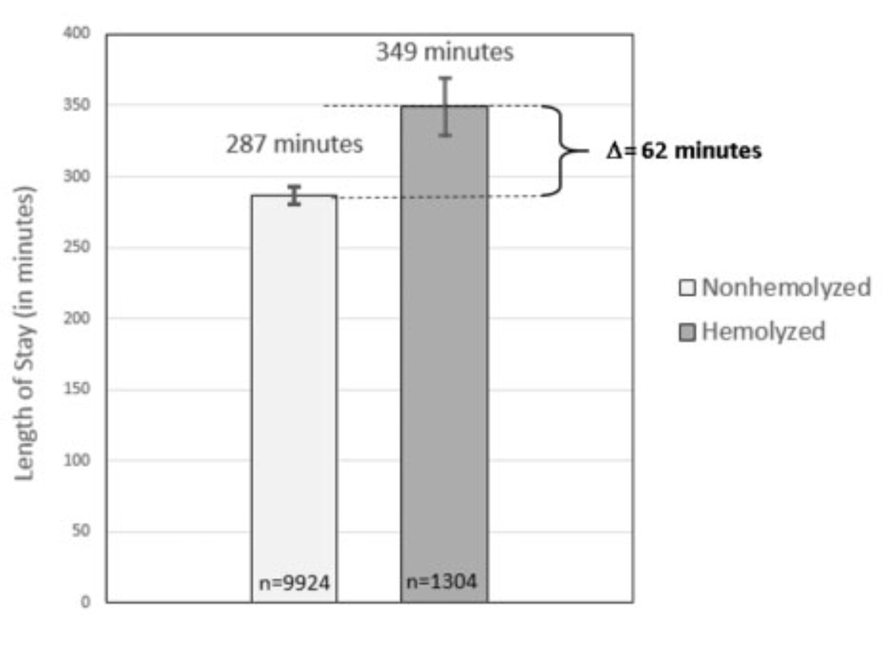
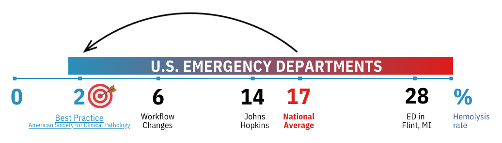

Fighting Hemolysis
The breakdown of red blood cells
A very common issue in Emergency Departments (ED) across the U.S.
Hemolysis is a well-known phenomenon that affects on average 17% of blood samples collected in EDs. Ask any emergency nurse or phlebotomist, they'll have the same answer: almost on every shift, at least one of their blood samples is unusable and rejected by the laboratory. Hemolysis occurs far less in other departments ; the fast-paced, volatile environment of emergency rooms is the perfect recipe for this obstacle to cause hours of delays on patient throughput.
Why is it important?
Hemolysis costs $1.4 B annually to the U.S. healthcare system.
According to a study [1], a blood sample that goes hemolyzed increases the patient's length of stay by over an hour. This goes along with an increased burden on nursing and laboratory staff, which need to repeat and analyze the additional test.
How does hemolysis occur?
As opposed to other hospital departments, emergency nurses draw their blood samples through IV catheters - it's faster and more convenient with their workflow. Combined with the use of standard syringes and vacuum tubes, they generate shear forces on the red blood cells at levels they can't withstand. The red blood cells then release their content in the plasma, compromising test results and prompting a repeat blood draw.
Why is it still unsolved?
Standard blood collection equipment is just not designed for the Emergency Department.
The current national hemolysis rate sits at 17%, more than 8 times the American Society for Clinical Pathology's target of 2%. No hospital is spared ; as of 2024, some of the leading hospitals in the nation had double-digit hemolysis rates.

Conventional blood collection devices, such as straight-stick butterfly needles, are impractical in the ED context.
References
- Phelan, M. P., Hustey, F. M., Good, D. M., & Reineks, E. Z. (2020). Seeing Red: Blood Sample Hemolysis Is Associated with Prolonged Emergency Department Throughput. The Journal of Applied Laboratory Medicine, 5(4), 732. 10.1093/jalm/jfaa073